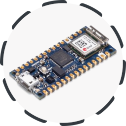
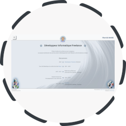
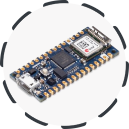
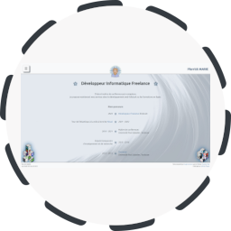

Pierrick MARIE - Développeur Informatique Freelance
D’abord maître de conférences en informatique, spécialisé dans l’Internet des Objets.
Je suis maintenant développeur freelance.
Je possède de l'expérience dans diverses domaines :
développement web, bibliothèques bas niveaux, frameworks pour applications réparties...
Projets Réalisés
Projets réalisés


")

 





QoCIM : un framework pour l'Internet des Objets
Projet de recherche QoCIM (Quality of Context Information Model). Un framework pour le développement
d’applications pour l’Internet des Objets. Il permet de définir, collecter, filtrer et exploiter la qualité des informations
nécessaires pour le bon fonctionnement des applications. QoCIM s’intègre le projet ANR INCOME.
- Technologies : Java, Maven, Broker dédié
- Licence : LGPL
- https://github.com/pierrick-marie/QoCIM-Framework
git clone https://github.com/pierrick-marie/QoCIM-Framework.git
Portage du protocole MQTT-SN pour Arduino
Adaptation du protocol MQTT-SN
(MQTT for Sensor Networks) pour Arduino. La communication entre les modules est assurée par des modules XBee.
Le coordinateur (broker) est développé en Java.
- Technologies : Arduino, C/C++, Java
- Licence : BSD 3-Clause
- https://framagit.org/pierrick/mqtt-sn
git clone https://framagit.org/pierrick/mqtt-sn.git
Sondes réseaux (TAP)
Documentation et construction de sonde réseau TAP.
Un projet pédagogique de développement de solutions de surveillance et d'analyse de réseaux d'entreprises pour mieux les protéger contre
des cyber-attaques.
- Technologies : Ethernet, IP, GNU\Linux
- Licence : BSD 3-Clause
- https://framagit.org/network-probe/tap
git clone https://framagit.org/network-probe/tap.git
Galerie d'images en JavaScript
Une galerie d'image en JavaScript. Fonctionnalités : génération de la galerie à partir d'une liste d'image ; visualisation
en plein écran ; utilisation de raccourcis clavier.
- Technologies : HTML5, CSS3, JavaScript, JQuery
- Licence : BSD 3-Clause
- https://framagit.org/pierrick/simple-gallery
git clone https://framagit.org/pierrick/simple-gallery.git
Mini projets Rust : tetris, music player, serveur FTP
Découverte et initiation au langage Rust. Développement d'un jeu de Tétris, d'un player de fichiers audio ainsi qu'un client et un
serveur FTP.
Développements basés sur le livre « Rust Programming by Example ».
- Technologies : Rust, SDL2, GTK3, Gstreamer
- Licence : BSD 3-Clause
- https://framagit.org/pierrick/rust-lang-discovery
git clone https://framagit.org/pierrick/rust-lang-discovery.git
Mini projet SpringBoot : API REST
Découverte et initiation du framework SpringBoot avec le langage Kotlin. Développement d'une API REST, de tests unitaires et
d'intégration et mise en place d'un mécanisme de contrôle d'accès.
- Technologies : SpringBoot, Gradle, Kotlin
- Licence : BSD 3-Clause
- https://framagit.org/pierrick/spring-boot-discovery
git clone https://framagit.org/pierrick/spring-boot-discovery.git
Gyroscope Bluetooth Arduino
Développement d'un gyroscope sans fil à l'aide de deux modules Arduino Nano 33
Iot et d'un écran LED. Un premier module Arduino mesure son
inclinaison et transmet en Bluetooth cette mesure au second module qui affiche alors cette valeur sur un écran LED.
- Technologies : Arduino Nano 33 IoT, Bluetooth
- Licence : BSD 3-Clause
- https://framagit.org/pierrick/gyroscope-ble
git clone https://framagit.org/pierrick/gyroscope-ble.git
Site web : pierrick-marie.github.io
Mon site web pro de présentation : https://pierrick-marie.github.io
- Technologies : Hugo server, Bootstrap, JQuery, Fontawesome
- https://pierrick-marie.github.io/
git clone
https://github.com/pierrick-marie/pierrick-marie.github.io.git
Site web de voyage : https://www.ninae.fr
Mon site web de voyage : https://www.ninae.fr
- Technologies : Wordpress
- https://www.ninae.fr
Gestion de bout en bout de la Qualité de Contexte pour l'Internet des Objets
Manuscrit de thèse. Intitulé : Gestion de bout en bout de la Qualité de Context pour l'Internet des Objets - le quadriciel QoCIM
- Technologies : QoCIM, Java, Raspberry Pi
- Licence : BSD 3-Clause
- https://pierrick-marie.github.io/manuscrit.pdf
Technologies
- Java, Kotlin
- Maven, Gradle
- Git, Docker
- Arduino, Raspberry Pi, Shell
- C, C++, Rust
- HTML5, CSS3, JavaScript, Hugo server
- SpringBoot, JQuery, Bootstrap, SQL
- Perl, Php, Python
Télécharger mon CV
CV court
CV universitaire long
Me Contacter
N'hésitez pas à me contacter par mail, ou via LinkedIn, Malt ou Github.